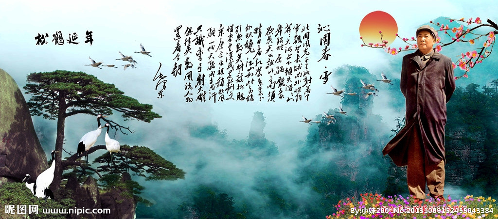

|
原文 沁园春·雪 毛泽东 北国风光，千里冰封，万里雪飘。 望长城内外，惟余莽莽；大河上下，顿失滔滔。 山舞银蛇，原驰蜡象，欲与天公试比高。 须晴日，看红装素裹，分外妖娆。 江山如此多娇，引无数英雄竞折腰。 惜秦皇汉武，略输文采；唐宗宋祖，稍逊风骚。 一代天骄，成吉思汗，只识弯弓射大雕。 俱往矣，数风流人物，还看今朝。 |
译文 北方的风光，千万里冰封冻，千万里雪花飘。望长城内外，只剩下无边无际白茫茫一片；宽广的黄河上下，顿时失去了滔滔水势。山岭好像银白色的蟒蛇在飞舞，高原上的丘陵好像许多白象在奔跑，它们都想试一试与老天爷比比高。要等到晴天的时候，看红艳艳的阳光和白皑皑的冰雪交相辉映，分外美好。江山如此媚娇，引得无数英雄竞相倾倒。只可惜秦始皇、汉武帝，略差文学才华；唐太宗、宋太祖，稍逊文治功劳。称雄一世的人物成吉思汗，只知道拉弓射大雕。这些人物全都过去了，数一数能建功立业的英雄人物，还要看今天的人们。 |
